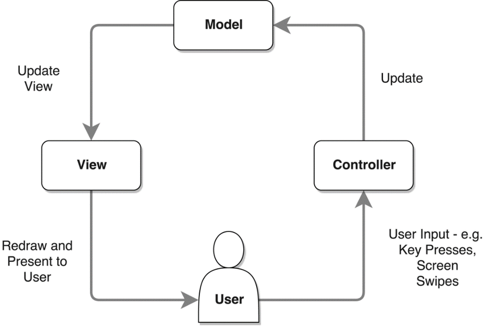
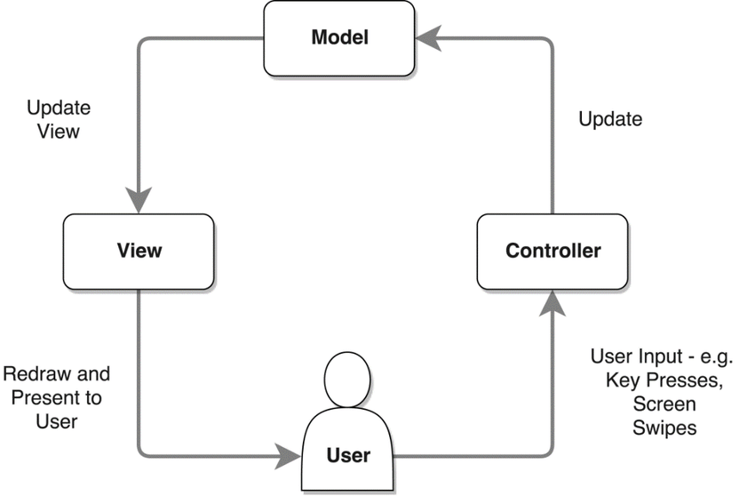
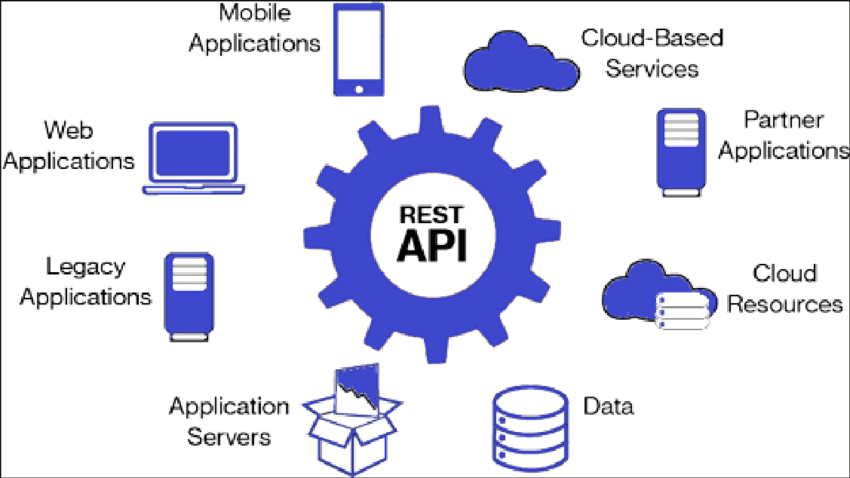
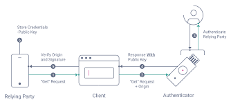
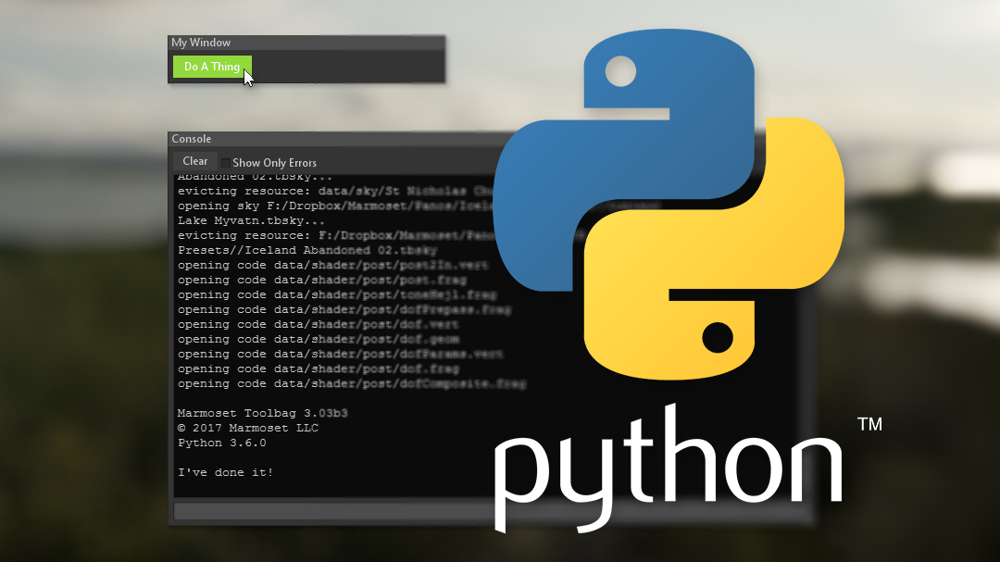

For this project, I containerized & deployed my Flask API to a Kubernetes cluster
using Docker, AWS EKS and also set up a CI/CD pipeline using AWS CodeBuild & CodePipeline services.
 

Fyyur is a musical venue and artist booking site.
Performed Create, Read, Update, and Delete (CRUD) operations on a database with SQLAlchemy ORM, learnt how to apply these operations across both databases and web applications. Stack- Python, Flask, SQLAlchemy, SQLAlchemy ORM, and PostgreSQL for DBMS.

APIs for the Trivia App.
Built APIs for exposing data in a controlled way, defining behaviours to access and manipulate data while maintaining its integrity. The project involved building RESTful APIs using Flask, Flask CORS, SQLAlchemy ORM, and testing with Unittest library, Postman and Curl.

Coffee Shop Menu App.
The project basically involved Identifying and authenticating users who access my RESTful API endpoints and implementing highly secure role-based access management design patterns. I outsourced my authentication to Auth0 and made use of Postman to test my endpoint collection.

A food ordering Python script
Python practice- Data Structures & Algorithms, Classes, Instances, Methods, Instantiation, Inheritance etc.